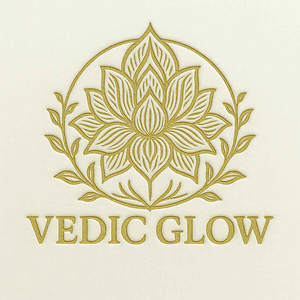

Trade Mark Journal No.2025/019 9 May 2025
UK00004192026 21 April 2025 (3,4,21)

- Class 3
- Skincare & Beauty Care: Cosmetic skin care preparations; skin creams and lotions; facial creams and serums; exfoliating scrubs; face masks; body scrubs; cleansing milks and oils; facial cleansers; facial oils; beauty balms; moisturising creams, gels, mousses and lotions; wrinkle-smoothing cosmetic preparations; anti-aging cosmetic creams and serums; skin softening and toning preparations; skin lightening creams; skin toners; hand and body lotions and creams; foot masks; body oils; face and body glitter; face paint; after-sun preparations; skin care essences; body polishes; body firming creams; skin calming serums; face and body packs. Make-Up, Lip & Oral Cosmetics: Cosmetic preparations for the face, body and lips; make-up; foundations; blushers; facial powders; lip balms, glosses, pomades, conditioners, stains and liners; eye cosmetics; sun-tanning and sun care cosmetics; cosmetic oral care products; breath fresheners in the form of chew sticks made from birchwood extracts. Hair Care: Hair care preparations; creams, lotions, balms, serums, masks and moisturisers for hair; oils for hair and scalp; hairstyling products; oil baths for hair care; beard care preparations; hair conditioners; hair and body washes; scalp treatments. Bath & Body Care: Cosmetic preparations for use in the bath or shower; bath and shower gels, creams, oils, milks, salts and foams; bubble baths; soaps for personal use; deodorants for body care; hand soaps, creams and lotions; body shampoos and washes; body polishes and scrubs; body oils; cleansing gels; liquid bath soaps; baby bath mousse; cosmetic bath soaks and preparations. Essential Oils & Aromatherapy: Essential oils; perfume and scented oils; aromatic oils for the bath; massage oils; body and facial oils; cleansing oils; oils containing peppermint, citronella, lavender, rosemary, jasmine, coconut, almond or castor for cosmetic purposes; cuticle oils; tissues impregnated with essential oils for cosmetic use. Home Fragrance & Incense: Incense in the form of sticks, cones, sachets and dhoop; fumigating incense (kunko); joss sticks; scented wax melts, ceramic stones, pine cones and wood; fragrance-emitting wicks; perfumed oils for use in the home.
- Class 4
- Candles; scented, fragranced, perfumed, and aromatherapy candles; votive candles; tealight candles; soy candles; table candles; candles in tins; floating candles; tallow candles; decorative candles; Christmas tree candles; Christmas lights in the nature of candles; candles for use in cake decoration; grave candles; nightlights [candles]; candles for use as nightlights or night lights; candles containing insect repellent; candles and wicks for lighting; bougies in the nature of wax candles; musk-scented and fruit-scented candles; special occasion candles; candle torches; tapers for lighting; lamp wicks; wicks for candles, lighting, or oil lamps; wax lights; wax for lighting or for making candles; paraffin wax; beeswax for use in the manufacture of candles; lamp oil; lamp oils; lamp fuel; butane for lighting.
- Class 21
- Essential oil burners; oil burners for aromatherapy purposes, electric and non-electric; aromatic oil diffusers, other than reed diffusers; electric and non-electric aromatic oil diffusers, other than reed diffusers; fragrant oil burners; plates for diffusing aromatic oils; oil cruets; automobile oil funnels.
SISI (UK) LTD